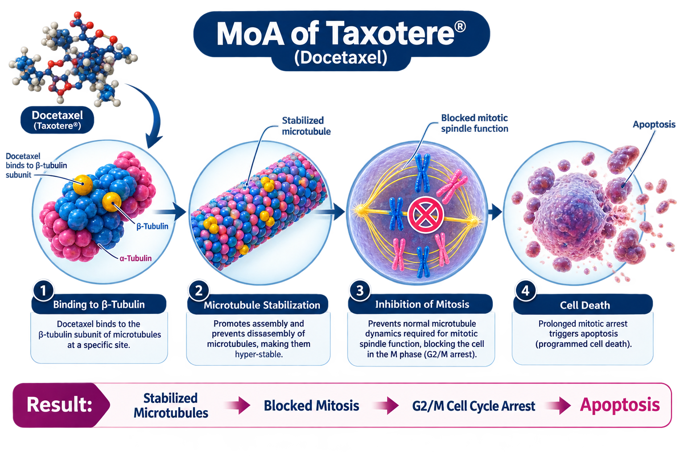

Sanofi
Taxotere (docetaxel) is a taxane chemotherapy agent that inhibits cell division by stabilizing microtubules. It is an established treatment option for advanced and metastatic prostate cancer, particularly in combination with androgen deprivation therapy in appropriate patients.
Taxotere
Docetaxel
Taxane
Intravenous
Sanofi
Docetaxel binds to tubulin and promotes the assembly of microtubules while preventing their normal depolymerization. This results in stabilization of the microtubule network, disruption of mitotic spindle function, cell-cycle arrest, and ultimately cancer cell death.

| Trial | Setting | Outcome |
|---|---|---|
| TAX 327 | Metastatic CRPC | Improved Overall Survival vs Mitoxantrone |
| CHAARTED | Metastatic CSPC | Improved Overall Survival with ADT + Docetaxel |
| STAMPEDE | Advanced Prostate Cancer | Improved Overall Survival |
A commonly used prostate cancer regimen is: 75 mg/m² IV every 3 weeks, with corticosteroid therapy as appropriate.
| Recommended Dose | 75 mg/m² IV Every 3 Weeks |
|---|---|
| Route | Intravenous Infusion |
| Schedule | Every 3 Weeks |
| Premedication | Corticosteroid as Recommended |